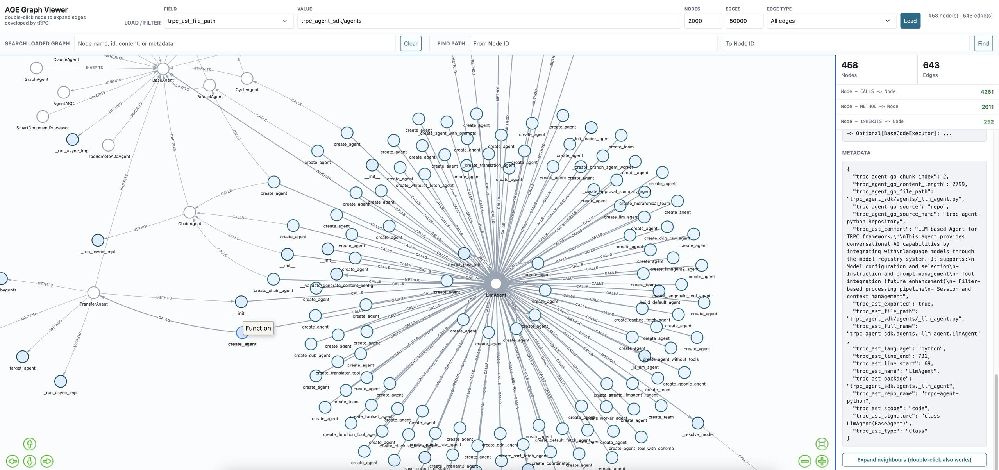

代码知识库与检索（Code RAG, Beta）
Beta 阶段：Code RAG（仓库源 + AST 解析 +
code_search/code_graph_*检索工具）目前处于 Beta，API 与行为可能调整。示例代码: code_context_engine · graphrag · ast
trpc-agent-go 提供了一部分代码知识库（Code RAG）能力：把代码仓库解析成带结构的语义单元，存进向量库（可选图库），让 Agent 像查文档一样检索代码，而不是在原始文本里 grep。
能力概览
- AST 语义解析：按 AST 把代码切成完整的语义实体（函数 / 方法 / 结构体 / 类 / 接口 / service / rpc 等），每个实体带结构化 metadata（签名、注释、包路径、文件位置），而不是按字符长度硬切。目前已开源 Go / Python / Proto，C++ / JavaScript 等正在逐步开放。
- 仓库加载：直接 ingest 远程 Git 仓库或本地目录，按文件类型分发到对应 reader，对单个仓库统一处理多语言代码 + Markdown。
code_search向量检索：AST 感知的混合检索——语义 query +trpc_ast_*元数据过滤 +content字面匹配，并自带同轮去重与多角度查询引导。code_graph_*图检索（GraphRAG）：基于 AST 提取的调用 / 依赖等边关系，结合图数据库（Apache AGE）做调用链、依赖路径等结构化导航。- MCP 复用：
code_search可直接包成 MCP server，供 Cursor、其他 runner 等外部 MCP 客户端共用同一套代码检索能力。
这些能力串成一条链路：
下面进入用法：「仓库源」讲摄取侧（怎么配仓库、控制扫描、产出哪些 metadata），「代码检索」讲检索侧（Agent 怎么用 code_search / code_graph_* 查代码）。
仓库源 (Repo Source)
仓库源是代码知识库的数据入口，负责整条链路最前面的「摄取 + 解析」：直接加载远程 Git URL 或本地 checkout 的仓库目录，遍历文件并按类型分发到对应 reader，对单个仓库统一处理 Go / Python / Proto / Markdown 等内容。本节关注怎么配置仓库、控制扫描范围、产出哪些 metadata。
当前开源状态说明：目前 AST-aware 代码解析能力已开源支持 Go、Python 和 Proto / PB。
C++、JavaScript等语言能力正在逐步开源中。对于这些尚未开源的语言，仓库源仍可通过普通文档 reader 处理对应文本类文件，但不会产出同等级别的 AST 语义实体。
基本用法
Go AST reader 和 Python AST reader 是可选模块，需要手动 blank import 完成注册：
- 扫描
.go文件 →knowledge/document/reader/golang - 扫描
.py文件 →knowledge/document/reader/python
Proto reader 默认注册，无需额外导入。
注意：Python reader 通过内嵌的 Python 脚本进行 AST 解析，运行时需要系统安装 Python 3.9+（仅使用标准库
ast模块，无第三方依赖）。
Repository 结构说明
Repository 用于描述单个仓库输入，可分别配置版本与范围：
| 字段 | 说明 |
|---|---|
URL |
远程 Git 仓库地址 |
Dir |
本地仓库目录 |
Branch |
指定分支 |
Tag |
指定 tag |
Commit |
指定 commit |
Subdir |
仅扫描仓库中的某个子目录 |
RepoName |
自定义仓库名称 |
Description |
仓库描述；code_search 工具会读取它并写入工具说明，帮助 LLM 知道该仓库是做什么的 |
RepoURL |
自定义仓库 URL（覆盖默认推导） |
URL与Dir通常二选一。当前一个repo.Source仅处理一个仓库输入。
版本选择优先级
当同时配置多个版本字段时，优先级为：
CommitTagBranch
也就是说，如果同时给出 Commit 和 Branch，最终会 checkout Commit。
扫描范围控制
仓库源当前推荐暴露的是“仓库语义”相关配置：
WithFileExtensions控制扫描哪些文件后缀WithSkipDirs控制跳过哪些目录名WithSkipSuffixes控制跳过哪些文件后缀Repository.Subdir控制某个仓库只扫描部分目录
例如只扫描仓库内 server/ 目录下的 Go 与 Markdown：
Metadata 行为
仓库源会在 reader 产出的文档基础上补充仓库级 metadata，例如：
| Metadata | 说明 |
|---|---|
trpc_agent_go_source=repo |
文档来自仓库源 |
trpc_agent_go_repo_path |
本地克隆后的仓库根目录 |
trpc_ast_repo_name |
仓库名称 |
trpc_ast_repo_url |
仓库 URL |
trpc_ast_branch |
当前解析的版本标识（branch/tag/commit） |
trpc_ast_file_path |
仓库内相对路径 |
注意：
trpc_ast_file_path语义上表示 仓库内逻辑路径，不是远程 Git URL- 如果输入来自 Git URL，仓库源会先 clone 到临时目录，再以相对路径形式写入
trpc_ast_file_path
与 AST Reader 的关系
仓库源不会自己解析代码，而是根据文件类型分发到底层 reader：
.go→ Go AST reader.py→ Python AST reader.proto→ Proto AST reader.md→ Markdown reader- 其他已注册扩展 → 对应 reader
因此，仓库源非常适合演示和构建“同一个仓库内多语言 / 多类型内容统一 ingest”的知识库。
解析效果示例
仓库源对 AST 感知文件（.go / .py / .proto）会按语义实体切块，每个切块包含三层信息：
- content：语义完整的代码片段（如一个完整的结构体/类/函数定义），非随机字符截断
- embedding text：结构化摘要（name / signature / comment 等），用于向量化检索
- metadata：
trpc_ast_*系列字段（type / full_name / language / file_path 等），用于精确过滤和定位
下面是对一个 Go 结构体的切块示意：
对于 Python 文件，同样按 Class / Function / Method 粒度切块；对于 .proto 文件，则按 service / rpc / message / enum 粒度切块。
代码检索
仓库源把代码 ingest 成 AST 语义实体后，Agent 通过 knowledge tool 来检索这些实体。框架提供两类代码检索工具：
| 工具 | 检索方式 | 定位 |
|---|---|---|
code_search |
向量语义检索 + 元数据/字面过滤（混合检索） | 主力工具：按功能 / 名字 / 字面代码找实体 |
code_graph_search / code_graph_traverse / code_graph_find_paths |
向量定位 + 图遍历 | 进阶：需要顺着调用 / 依赖关系做结构化导航时 |
大多数「这段代码在哪 / 谁实现了 X / 某个报错出自哪」的问题，用 code_search 就够了；只有当你需要「谁调用了它、调用链怎么走、两个符号怎么连起来」这类关系型导航时，才需要 GraphRAG 图工具。
code_search：AST 语义代码检索
NewCodeSearchTool 基于普通向量库（无需图数据库）创建一个面向代码的检索工具，默认工具名 code_search。它在通用搜索之上做了三件代码专用的事：
- 暴露 AST 元数据维度：Agent 可按
trpc_ast_repo_name/trpc_ast_scope/trpc_ast_type/trpc_ast_full_name/trpc_ast_package/trpc_ast_file_path等字段精确过滤。 - 支持字面检索：embedding 文本只来自结构化语义字段（name / signature / comment 等），不含具体代码逻辑；查精确报错串、SQL、HTTP 路径、具体 API 调用时，用
content+like在原文里匹配，而不是只靠语义 query。 - 同轮去重 + 多角度查询：工具会记住本轮已返回的 AST chunk 并不再重复返回，引导 Agent 换角度（定义 → 调用者 → 接口实现 → 相邻包）而不是反复换同义词。
基本用法
常用配置项
| 选项 | 说明 |
|---|---|
WithCodeSearchToolName(name) |
自定义工具名（默认 code_search） |
WithCodeSearchToolDescription(desc) |
覆盖默认工具说明 |
WithCodeSearchMaxResults(n) |
单次返回结果数上限（默认 10） |
WithCodeSearchMinScore(score) |
相似度下限（默认 0.1） |
WithCodeSearchFilter(map) / WithCodeSearchConditionedFilter(cond) |
始终叠加的静态过滤（如锁定某个 repo） |
WithCodeSearchRepoInfos([]CodeRepoInfo) |
手动声明仓库名 / 描述，覆盖从源自动推导的结果 |
WithCodeSearchDedup(enabled) |
开关同轮去重（默认开启） |
若未显式提供 repo 信息，
code_search会从 Knowledge 的仓库源自动推导仓库名与Description写进工具说明，方便 LLM 在多仓库场景里选对trpc_ast_repo_name过滤。
通过 MCP 复用
code_search 是标准 CallableTool，可以直接包成一个 MCP server，让 Cursor、Augment 或另一个 trpc-agent-go runner 共用同一套 AST 代码检索能力。完整示例（本地 Agent 直连 + MCP server + 与 Augment 对比）见 examples/knowledge/features/code_context_engine。
code_graph_*：代码图谱检索（GraphRAG，进阶）
除了向量化检索（embedding + vector store），仓库源还支持以图谱的方式存储代码结构关系。AST reader 在解析时会提取实体之间的边关系，结合图数据库（Apache AGE）实现结构化的代码导航。

边类型
| 边类型 | 含义 | 示例 |
|---|---|---|
CALLS |
函数/方法调用 | main → server.Start |
METHOD |
类/结构体的方法 | Server → Server.Start |
FIELD |
结构体字段 | Server → services |
PARAM |
函数参数 | NewServer → opts |
RETURNS |
函数返回类型 | NewServer → Server |
IMPLEMENTS |
类型实现接口 | MyService → Handler |
ALIAS_OF |
类型别名指向目标类型 | MyAlias → TargetType |
CONTAINS |
包含关系 | package server → Server |
用法
Agent 可用的图工具
| 工具 | 功能 |
|---|---|
code_graph_search |
向量检索 AST 节点，返回匹配的代码实体 |
code_graph_traverse |
从指定节点出发，沿边遍历关联节点（如查找某函数的所有调用者） |
code_graph_find_paths |
查找两个代码实体之间的路径（如追踪调用链） |
通过向量检索定位入口节点，再结合图遍历探索结构关系，Agent 可以在无需阅读大量源码的情况下理解代码架构。